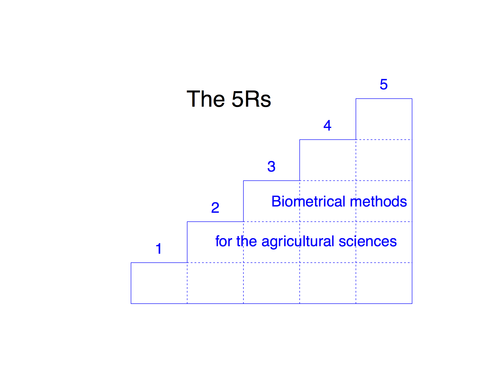

Biometrical methods for the agricultural sciences: The 5Rs. (2014)

The e-book will be available in the following formats:
epub (suitable for iPad tablet using iBooks, Android tablets with appropriate apps, and Firefox with epubreader add-on), MOBI (Kindle), and also HTML and PDF.
BMAS package for R Statistical System (version 1.1) for at least R-3.0.0
Download BMAS_1.0.zip for Windows platform (compiled under R-3.0.2 Windows 7)
Download BMAS_1.1.tar.gz for Mac OSX (compiled under R-3.0.0 Mac OS X 10.8.5)
Case studies - Volume 1 (under construction)
CC45 The analysis of the nematode (eelworm) data from pages 45-46 Cochran and Cox (1957)
Mario D'Antuono, last modified January 16, 2014.